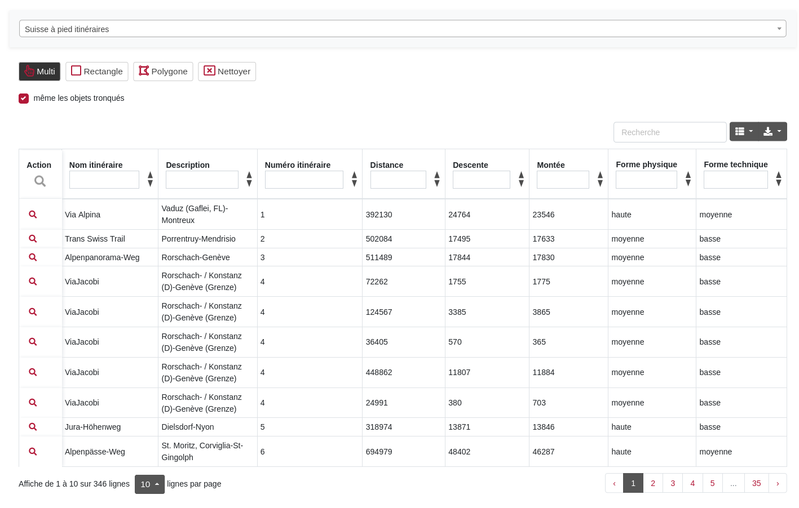

Champs text: insertion de texte arbitraire, filtré en fonction du texte inséré.
Exemple: bern -> Via Albula/Bernina, Via Berna etc.
Supprimer le filtre: Supprimer le contenu du champ ou cliquez sur "Nettoyer"

Fonctionnalité sur le listes:
Les données peuvent être filtrées sur n'importe quelle colonne ou combinaison de colonnes. Différents types de filtres sont disponibles en fonction du contenu de la colonne:
Champs text: insertion de texte arbitraire, filtré en fonction du texte inséré.
Exemple: bern -> Via Albula/Bernina, Via Berna etc.
Supprimer le filtre: Supprimer le contenu du champ ou cliquez sur "Nettoyer"

Champs de sélection: Champs à contenu fixe, sélection simple ou multiple du filtre.
Exemple: Forme physique basse, moyenne et/ou haute, éventuellement combinés avec un filtre de texte comme ci-dessus.
Supprimer le filtre: Supprimer le contenu du champ ou cliquez sur "Nettoyer"

Champs numériques: opérateurs numériques: plus grand, plus petit, égal, etc. ou intervalle de-à.
Exemple filter sur la distance: <4000, 4000-6000, >10000 etc.
Exemple de combinaison avec des champs de sélection: distance <4000 et forme physique basse et forme technique basse; si vous vous sentez à la hauteur: distance > 10000, forme condition heute et forme technique haute
Supprimer le filtre: Supprimer le contenu du champ ou cliquez sur "Nettoyer"
Les options de sélection suivantes sont disponibles et peuvent être combinées avec les filtres mentionnés ci-dessus. Optionnellement, seuls les objets entiers ou même les objets tronqués. La sélection est reflétée dans la liste.

Sélectionner les colonnes à afficher: sélectionner et désélectionner les colonnes à afficher.

Export: JSON, XML, CSV, TXT, SQL, MS Excel